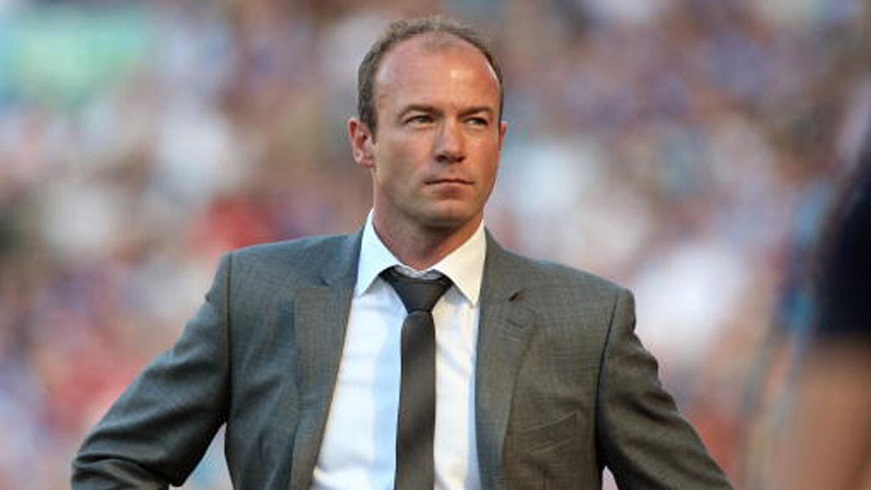

Alan - coaching and management
Coaching
On his retirement as a player Shearer responded to speculation of an immediate move into coaching that he would take some personal time off to "enjoy life" for the next couple of years. He was also quoted as saying that he would eventually like to move into management, "when the time was right" however as of March 2009 he was yet to start the UEFA Pro Licence course,. which is required to be permitted to manage a team in the Premier League and European competition.
Reflecting his desire for personal time off to "enjoy life", in July 2006 he turned down a coaching role with England, citing his BBC commitments and desire to be away from the pressure of a job within football. Despite this, Shearer was often linked in the media with managerial or coaching positions at his three former clubs.
Shearer took a brief role in the dugout for his final three games under Glenn Roeder. Shearer had rejected offers of coaching or assistant roles at Newcastle under both the returning Kevin Keegan in February 2008 and Joe Kinnear in November 2008. Shearer had previously had talks about, but never been offered, a full-time manager’s role at Newcastle until his appointment on 1 April 2009.
Manager – Newcastle United
In a surprise move, late on 1 April 2009, it was announced that Shearer would become the manager of his former club Newcastle United for the remaining eight games of the season, taking over from head coach Chris Hughton who was in temporary charge while the permanent manager Joe Kinnear recovered from heart surgery, having taken ill on 7 February. Shearer stated "It’s a club I love and I don’t want them to go down. I’ll do everything I can to stop that."
Shearer was unveiled at a press conference the following day by club managing director Derek Llambias. In explaining his acceptance of a managerial role at Newcastle at this time, Shearer stated that he would not have done this for any other club in this position, including his two other previous Premier League clubs. Amid persistent questioning regarding the permanency of the appointment, Llambias announced that Shearer was to be manager for the remaining eight games, and after his recovery, Joe Kinnear would return as manager in the summer. Shearer confirmed that the BBC had agreed to giving him an 8 week sabbatical from his Match of the Day role.
Llambias also confirmed Dennis Wise had left his executive role at the club and the club had no plans to appoint a replacement, with Shearer stating that "the people that have moved, were moving on anyways, that had nothing to do with me". Wise’s presence had previously been speculated as being a blockage to any possible appointment of a manager. Shearer accepted the surprise offer on the Monday on the condition that he could bring in Iain Dowie as his assistant. Shearer also brought in Paul Ferris to oversee club medical, physio and dietary matters. Ferris had previously worked with Shearer in his playing days, and had been at the club for 13 years prior to an earlier departure under then manager Glenn Roeder.